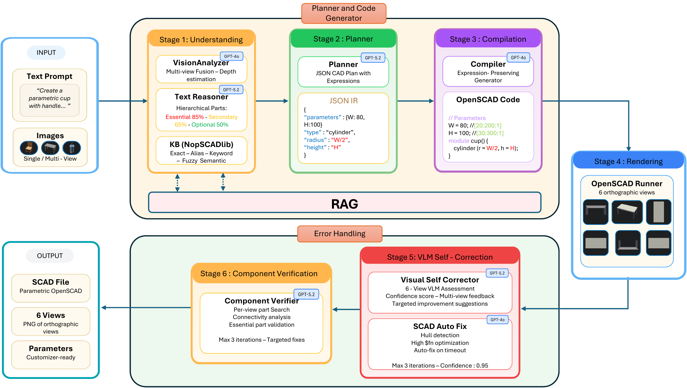
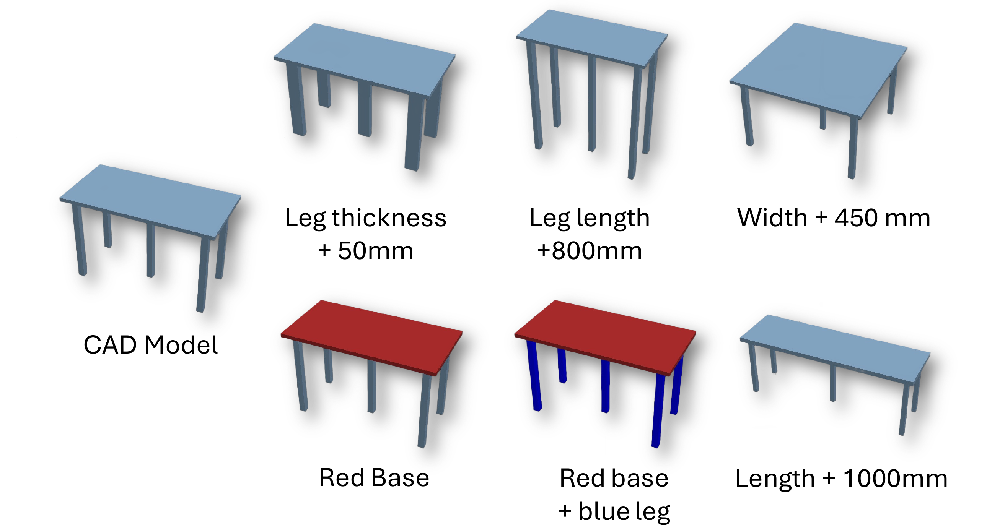
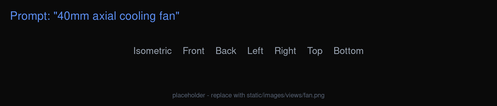
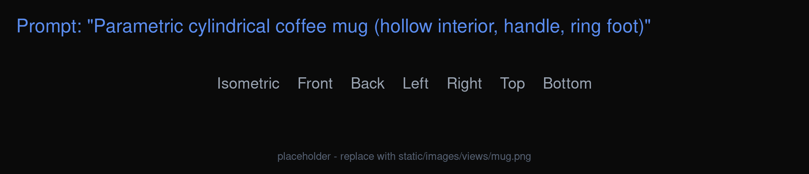
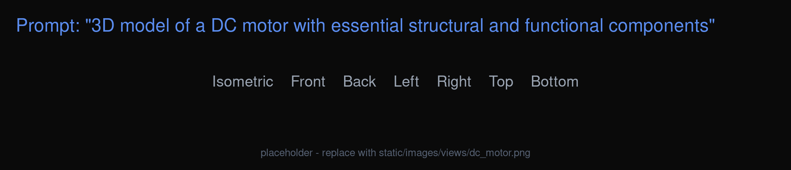
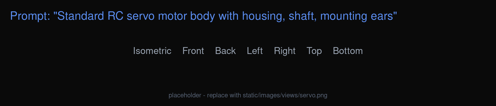
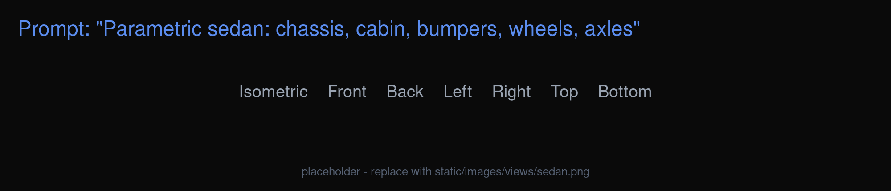
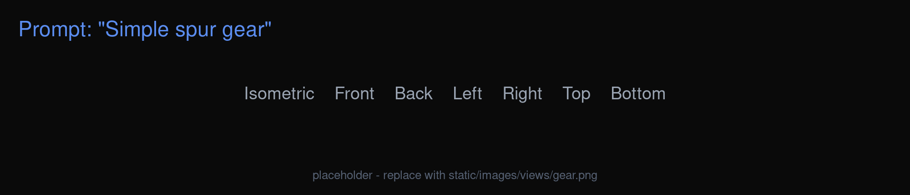

CRAFT turns natural-language descriptions into executable, editable parametric OpenSCAD programs — from mechanical parts to everyday objects — without any task-specific training.
1Iowa State University 2New York University
IEEE International Conference on LLM-Aided Design (LAD), 2026
CRAFT turns natural-language descriptions into executable, editable parametric OpenSCAD programs — from mechanical parts to everyday objects — without any task-specific training.
Text-to-CAD generation has the potential to make mechanical CAD more accessible, but existing approaches face a trade-off between data dependence and output fidelity. Supervised methods rely on large paired text–model datasets, while zero-shot prompting strategies are often brittle and tend to lose the parametric structure needed for downstream editing and customization. We present CRAFT, a corrective and robust multi-agent framework that produces parametric OpenSCAD programs from natural language without task-specific training. At its core is a JSON intermediate representation that preserves symbolic parametric expressions throughout the generation process, enabling models to remain editable rather than collapsing into hard-coded geometry. CRAFT combines semantic understanding, parametric planning, compilation, rendering, self-correction, and component-level verification within a layered recovery process, using multi-view visual feedback to detect and repair geometric errors. Across NopSCADlib, ABC, and Slice-100K, CRAFT is competitive with direct zero-shot baselines in perceptual and geometric quality while exposing substantially more editable parametric structure.

The CRAFT pipeline maps a text prompt (and optional reference images) to a parametric OpenSCAD program through six stages, coordinated by a five-layer recovery strategy. Reasoning-intensive stages use GPT-5.2; deterministic translation and repair steps use GPT-4o.
1 · Understanding parses the prompt and any images, classifies parts by importance, and retrieves standard-component specifications from NopSCADlib.
2 · Planning emits a JSON CAD plan that preserves symbolic parametric expressions, validated before any code is generated.
3 · Compilation translates the plan into OpenSCAD, keeping expressions and customizer parameter ranges intact.
4 · Rendering produces six orthographic views with timeout-aware simplification of expensive constructs.
5 · VLM Self-Correction compares the six-view render to the prompt and proposes targeted fixes for up to three rounds.
6 · Component Verification checks that expected parts are present using tiered confidence thresholds.
A five-layer recovery strategy (schema repair → SCAD auto-fix → VLM correction → component verification → manual hint) escalates repair under a shared retry budget.

Because CRAFT preserves symbolic parametric structure, individual parameters can be edited after generation — changing dimensions, proportions, and appearance — while the program remains valid and re-renderable.
Each result is rendered from an isometric view plus six orthographic views (front, back, left, right, top, bottom), the same views CRAFT uses internally for visual self-correction.
static/images/views/ using the names fan.png, mug.png,
dc_motor.png, servo.png, sedan.png, gear.png to replace them.






Geometric accuracy (CRAFT vs. direct generation)
| Dataset | Method | Chamfer ↓ | F1@1% ↑ | Voxel IoU ↑ |
|---|---|---|---|---|
| NopSCADlib | CRAFT | 0.0654 | 0.2530 | 0.2356 |
| GPT-4o | 0.0733 | 0.2467 | 0.2135 | |
| GPT-5.2 | 0.0662 | 0.2587 | 0.1890 | |
| ABC | CRAFT | 0.0841 | 0.1233 | 0.0433 |
| GPT-4o | 0.1008 | 0.0857 | 0.0212 | |
| GPT-5.2 | 0.0969 | 0.0875 | 0.0192 | |
| Slice-100K | CRAFT | 0.0612 | 0.2924 | 0.0616 |
| GPT-4o | 0.0751 | 0.2122 | 0.0711 | |
| GPT-5.2 | 0.0622 | 0.2768 | 0.0636 |
CRAFT leads on volumetric overlap and out-of-distribution geometry (ABC, Slice-100K) while remaining competitive on in-distribution surface metrics. Full per-tier tables, the ablation, and recovery statistics are in the paper.
@inproceedings{rafi2026craft,
title = {CRAFT: Corrective and Robust Multi-Agent Framework for Text-to-Parametric CAD},
author = {Rafi, Mohammed Musthafa and Jignasu, Anushrut and Saraeian, Mahdi
and Hegde, Chinmay and Balu, Aditya and Krishnamurthy, Adarsh},
booktitle = {IEEE International Conference on LLM-Aided Design (LAD)},
year = {2026}
}